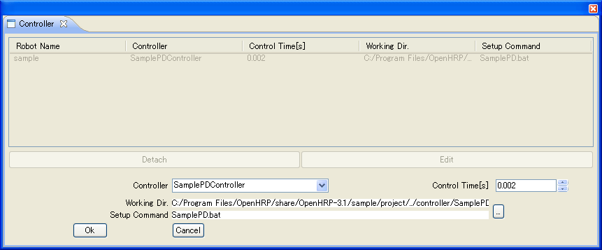

概要
コントローラブリッジは、シミュレーション対象のモデルと各OpenRTMコンポーネント間の入出力を介するプロセスです。
起動オプションまたは、設定ファイルによって入出力ポートを設定しポート間の接続を指定します。
マニュアル
起動オプション
起動オプションは以下の通りです。
| 起動オプション(書式) | 説明 |
| --server-name コントローラ名 | CORBAネームサーバにコンポーネントを生成するファクトリサーバの名前を指定します |
| --in-port ポート名[:識別名]:プロパティ名 | 入力ポート名を与えプロパティを指定します |
| --out-port ポート名[:識別名]:プロパティ名 | 出力ポート名を与えプロパティを指定します |
| --connection ポート名[:コントローラ側インスタンス名]:ポート名 | ポート間接続を指定します |
| -h / --help | 起動オプションの表示 |
| --config-file 設定ファイル名 | 起動オプションを設定したファイルを指定します |
| --robot-name 対象モデル名 | 対象モデル名を与えます |
| --name-server ネームサーバホスト名:ポート | OpenHRPのCORBAネームサーバを指定します |
Table 1:起動オプション一覧
--server-name コントローラ名
ブリッジのCORBA側コンポーネントを生成するファクトリサーバの名前を指定します。GrxUIのControlle View のControllerプルダウンに表示されます。

Fig.1: GrxUI Controller View
--in-port ポート名[:識別名]:プロパティ名
入力ポート名を与え、そのポートのプロパティを指定します。識別名を指定すれば特定の部位の値だけ入力します。
識別名はVRMLモデルのノード名を指定します。
識別名はコンマ(,)で区切って複数指定することができます。データは指定した順番で入力します。
例:--in-port arm_elbow:RARM_ELBOW,LARM_ELBOW:JOINT_VALUE
関節名称RARM_ELBOWとLARM_ELBOWのJOINT_VALUEプロパティの値を入力します。
--out-port ポート名[:識別名]:プロパティ名[:出力間隔（秒）]
出力ポート名を与え、そのポートのプロパティを指定します。識別名を指定すれば特定の部位の値だけ出力します。
識別名はVRMLモデルのノード名を指定します。
識別名は , で区切って複数指定することができます。指定した順番でデータは出力されます。
ただし、プロパティ名がCONSTRAINT_FORCEのときは、識別名は1つしか指定できません。
出力間隔を指定すると、Fig.1に示すControll Timeで指定した時間の整数倍で指定間隔に近い時間で、データを出力します。
指定しない場合は、Control Timeで指定した時間間隔で出力します。
画像データを出力する場合には、識別名のかわりに必ずVisionSensorのsensorIdの値を指定します。
sensorIdを複数指定することはできません。
例:--out-port image:0:COLOR_IMAGE:0.1
sensorIdが0のVisionSensorのカラー画像を0.1秒毎に出力します。
--connection ポート名[:コントローラ側インスタンス名]:ポート名
入出力ポート間の接続を指定します。左は対象モデル側のポート名、右はコントローラ側のポート名を指定しコロンで区切ります。
コントローラ側のインスタンス名は省略できます。
例:--connection angle:JoystickController0:angle
対象モデル側のポートangleとインスタンス名JoystickController0のポートangleを接続します。
-h / --help
起動オプションの表示と説明を英文で標準出力します。 -h または --help が使えます。
--config-file 設定ファイル名
起動オプションを設定したファイルを指定します。
起動オプションを一元化したり複雑な入出力ポート設定の時に利用してください。
サンプルフォルダには設定ファイル"bridge.conf"がありますので参考にしてください。※
OpenHRP/Controller/rtc/SamplePD/bridge.conf の場合
server-name = SamplePDController
in-port = torque:JOINT_TORQUE
out-port = angle:JOINT_VALUE
connection = angle:angle
connection = torque:torque
という記述です。
書式は起動オプションからハイフンを取り除き '=' でオプションに文字列を与えたテキストファイルです。
'='の左右に連続して隣接する半角空白とtabは無視されます。
Unix環境の運用も考慮してWindows環境でも改行コードはLFに統一した方が無難です。
※:Ver3.0.0より前にはありません。さらにVer3.0.2では書式を一部変更いたしましたので最新のOpenHRPを導入してください。
--robot-name 対象モデル名
入出力ポートを備えた通信対象モデル名を指定します。デフォルト値は"VirtualRobot"です。
インスタンスが複数生成されることも考慮して名前にindex番号を0から割り振りますから、ネームサーバーには"対象モデル名0"が最初に登録されます。
--name-server ネームサーバホスト名:ポート
OpenHRPのCORBAネームサーバを指定します。
デフォルト値は"localhost:2809"です。
例:--module 192.168.1.10:2809
IPアドレス192.168.1.10のポート番号2809で接続待ちするOpenHRPのCORBAネームサーバを指定します。
プロパティ
指定可能なプロパティは以下の通りです。
| プロパティ名 | In Port / Out Port | データ型 | データ数 | 説明 |
| JOINT_VALUE | yes/yes | RTC::TimedDouble | 1 | 関節角度または関節位置 |
| JOINT_VELOCITY | yes/yes | RTC::TimedDouble | 1 | 同上微分 |
| JOINT_ACCELERATION | yes/yes | RTC::TimedDouble | 1 | 同上２階微分 |
| JOINT_TORQUE | yes/yes | RTC::TimedDouble | 1 | 関節トルク |
| EXTERNAL_FORCE | yes(1)/no | RTC::TimedDoubleSeq | 6 | 力, トルク |
| ABS_TRANSFORM | yes(1)/yes(1) | RTC::TimedDoubleSeq | 12 | ワールド座標系における位置姿勢(最初の3要素が位置ベクトル、9要素が姿勢) |
| ABS_VELOCITY | yes(1)/yes(1) | RTC::TimedDoubleSeq | 6 | ワールド座標系における速度(3次元ベクトル)と角速度(3次元ベクトル) |
| ABS_ACCELERATION | yes(1)/yes(1) | RTC::TimedDoubleSeq | 6 | ワールド座標系における加速度(3次元ベクトル)と角加速度(3次元ベクトル) |
| FORCE_SENSOR | no/yes | RTC::TimedDoubleSeq | 6 | 力(3次元ベクトル), トルク(3次元ベクトル) |
| RATE_GYRO_SENSOR | no/yes | RTC::TimedDoubleSeq | 3 | ジャイロセンサー(3次元ベクトル) |
| ACCELERATION_SENSOR | no/yes | RTC::TimedDoubleSeq | 3 | 加速度センサー(3次元ベクトル) |
| RANGE_SENSOR | no/yes | RTC::TimedDoubleSeq | センサー出力数 | 距離センサー．計測方向に向かって右方向からスキャンした際の距離データが入っています。
距離は干渉が発生する限り、maxDistanceよりも遠い場合も出力されます．干渉がない場合は0が出力されます。
|
| CONSTRAINT_FORCE | no/yes(3) | RTC::TimedDoubleSeq | 6*接触点数 | ワールド座標系における接触位置(3次元ベクトル)と力(3次元ベクトル) |
| COLOR_IMAGE(4) | no/yes(2) | RTC::TimedLongSeq | ピクセル数 | color画像 |
| GRAYSCALE_IMAGE(4) | no/yes(2) | RTC::TimedOctetSeq | ピクセル数 | gray scale画像 |
| DEPTH_IMAGE(3),(4) | no/yes(2) | RTC::TimedFloatSeq | ピクセル数 | depth画像 |
Table 2:プロパティ一覧
(1)：in-portオプションで[:識別名]を指定した場合のみ有効
(2)：out-portオプションで[:識別名（sensorId)]を指定した場合のみ有効
(3)：out-portオプションで[:識別名]を１つ指定した場合のみ有効
(4)：
Simulation ViewでView Simulationにチェックを入れた場合のみ有効